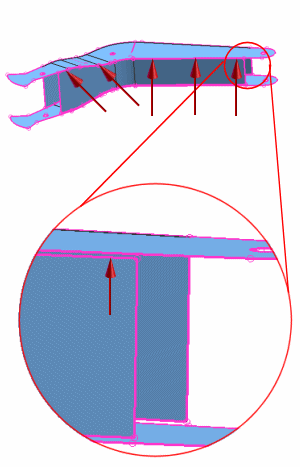

Stitch bottom edges to right side faces
The Stitch Edge dialog box is open from the previous step.
Stitch edges of the boom bottom to the faces on the right side.
-
 the edges of BOOM_BOTTOM that are next to the right side (zoom in to see these edges)
the edges of BOOM_BOTTOM that are next to the right side (zoom in to see these edges)

-
Target Geometry
-
 (Select Face)
(Select Face)
-
the five faces of BOOM_RIGHT
-
OK
-
 Static Wireframe (View toolbar, Rendering Style Drop-down list)
Static Wireframe (View toolbar, Rendering Style Drop-down list)